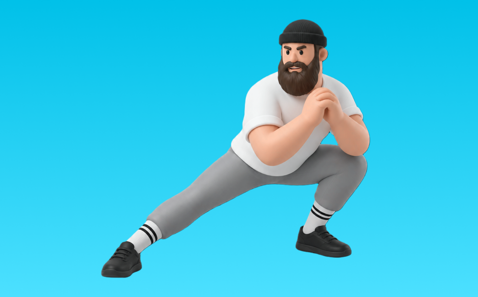

サイドランジ

サイドランジとは、自重を使って「横に踏み出してしゃがむ」動作でお尻（臀筋）＋内もも（内転筋）を鍛える種目です。横へ踏み出して腰を引き、膝とつま先の向きを揃えて戻す動作を繰り返します。内ももの強化や可動性向上が期待できます。
- 対象部位
- 脚
- 器具
- 自重
- 記録形式
- 回数
- 別名
- ラテラルランジ
YouTube動画
-
【フォワードランジ】は踏み込み方を変えるだけで一気にすごいトレーニングになります
-
【トップトレーナーが教えるロジカル筋トレ】これが正解！「ランジ」の正しいやり方を徹底解説
-
サイドランジの正しいやり方。美脚効果、内もも周辺の引き締めに！【お尻＆脚痩せ】
-
サイドランジを毎日30回、1週間続けてみて！内ももに効かせる感覚がわかってきて、効果が出やすいからオススメ！
-
お尻＆脚痩せ、内もも周辺を引き締める筋トレ！「サイドランジ」のやり方
-
【10種目10分】脚・お尻を究極に追い込むスクワット＆ランジトレーニング
-
【初心者向け】自宅でダイエットしたい方は必見！『サイドランジ』を解説します【筋トレ】奈良県パーソナルジム
-
1日5分 自宅筋トレプログラム「サイドランジ」おしりに効く！｜1日1トレーニングで4週間で確実に1kg痩せよう｜みんなでフィットネス
-
【筋トレ】 サイドランジ 解説講座 【フォーム】【初心者】
-
6.サイドランジのやり方とポイント
-
【DIGEST】筋トレで「壊れない」身体を手に入れろ／究極のスクワットフォームを伝授／「床を掴む」 トレーニングで意識革命／あなたの足が覚醒するランジ／コスパ最強「時短」身体論
-
【レッグランジ】下半身(太もも お尻 内もも)筋トレ、そして脂肪燃焼したいならレッグランジがおすすめ。自宅で出来る４種目、３分間で一緒にトレーニングをしましょう。
-
【代謝アップ】バックランジのやり方を解説！片足を下げてしゃがむ、下半身の筋トレ
-
ランジの効果的なやり方｜目的別に3つのポイントを解説
-
【最強プランク】初心者オススメ！腹筋を鍛える体幹トレーニング「プランク」の正しいやり方
YouTubeショート
-
太ももの横にあるお肉をスッキリする方法✨
-
サイドランジの正しいやり方！美尻になる超絶ヒップアップトレーニングの決定版！
-
これ7日間続けると腸腰筋緩んで10歳若返ります
-
サイドランジ
-
【腸腰筋】硬い人！腰が反りやすく、太もも太くなりやすい #太もも痩せ #姿勢改善 #腸腰筋ストレッチ
-
🔥股関節ガチガチの人必見🔥🏠股関節周りほぐれるエクササイズ🏠✔️老廃物流れる✔️脚スッキリ#エクササイズ#股関節#ストレッチ#脚痩せ#o2gym#o2ジム
-
【比較】ルーマニアンデッドリフトVSデッドリフト #セミパーソナルジム #トレーニング #くびれ
-
【ブルガリアンスクワット】3つのポイント #パーソナルトレーナー #筋トレ #脚トレ #下半身トレーニング #ブルガリアンスクワット
-
【ダンベル】背中トレ4選 #筋トレ
-
反発を推進力へ変えるドリル#ランニング塾
-
【逆に壊れる】スクワット初心者に多い膝を出さない間違ったフォーム #筋トレ #エクササイズ
-
反り腰さん向けプランクのやり方！
-
世界最大のダンベルがヤバすぎる【世界の筋肉】
-
【筋トレ解説】脚とお尻を追い込む！バックランジ解説
-
骨格のせいにして歩き方から逃げるなよ#トレーニング #体幹トレーニング #サッカー #サッカートレーニング #股関節 #soccer #身体操作
-
脚が細くなるランジのやり方！前ももがキツくなる方はこれを見て#shorts #脚やせ #エクササイズ
-
脚を細くするスクワットはこれ！お尻ともも裏鍛えれば、前ももがスッキリするよ
-
【ダンベルを使ったサイドランジの正しいやり方】デカい筋肉、尻＆腿は多角的に鍛えよ！｜Training Movie 100｜Tarzan Web
-
【筋トレ解説】代謝を上げて脂肪を燃やす🔥サイドランジ解説
-
筋トレ初心者のデブが家トレを2年間続けた結果がヤバイ【ホームジム】#Shorts
-
誰も知らない世界最速の作り方
-
腕立て伏せの一番大事ポイント#shorts
-
1ヶ月でお腹の脂肪が減るバックランジの、もっと効果が出るポイント！チャンネル登録をお願いします! #筋トレ #ダイエット #トレーニング
-
バッティング軸足の溜め方 #shorts #野球基地FREEDOM
動作方法
- 足幅を決め、体幹を固める
- 股関節と膝を同時に曲げて下ろす
- 足裏全体で床を押して立ち上がる
動作ポイント
- 膝とつま先の向きをそろえる
- 胸を落としすぎない
- かかとを浮かせない
ワンポイントアドバイス
- ウォームアップで股関節と足首を動かす
- 高重量の日はセーフティ設定を確認する
目的別回数設定
目的や体力に応じた一般的な目安です。無理のない範囲で調整してください。
- 筋力アップ
- 1〜5回
- 筋肥大
- 6〜12回
- 持久力アップ
- 13〜20回
YouTube動画について
動画はYouTubeの公開情報をもとに表示しています。内容は投稿者によるもので、Biggrによる監修ではありません。
アプリを入手
筋トレやトレーニングの記録はBiggrにお任せください。今すぐ無料で使い始められます。